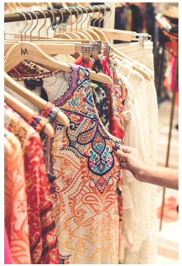

<!doctype html>
<html lang="en">
  <head>
   <meta charset="UTF-8">
   <meta http-equiv="X-UA-Compatible" content="ie=edge"> 
    <meta name="viewport" content="width=device-width, initial-scale=1.0">
    <meta name="viewport" content="width=device-width, initial-scale=1, shrink-to-fit=no">
    <link rel="stylesheet" href="https://stackpath.bootstrapcdn.com/bootstrap/4.5.2/css/bootstrap.min.css" type="text/css">
    <link rel="stylesheet" href="https://stackpath.bootstrapcdn.com/font-awesome/4.7.0/css/font-awesome.min.css" type="text/css">
    <link rel="stylesheet" href="https://cdnjs.cloudflare.com/ajax/libs/hover.css/2.3.1/css/hover-min.css" integrity="sha512-csw0Ma4oXCAgd/d4nTcpoEoz4nYvvnk21a8VA2h2dzhPAvjbUIK6V3si7/g/HehwdunqqW18RwCJKpD7rL67Xg==" crossorigin="anonymous" type="text/css">
    <link rel="stylesheet" href="assets/css/style.css" type="text/css">
    <title>African Fabric</title>
  </head>
    <body>
     <script src="https://stackpath.bootstrapcdn.com/bootstrap/4.5.2/js/bootstrap.min.js" integrity="sha384-B4gt1jrGC7Jh4AgTPSdUtOBvfO8shuf57BaghqFfPlYxofvL8/KUEfYiJOMMV+rV" crossorigin="anonymous"></script>
</html>
  </head>
  <body id="bgimg1">
  <section>
<div class="row container-fluid">

      <div class="col inline-block">
     <nav class=" row  navbar navbar-light bg-light">
  <a class="navbar-brand" href="index.html">
    
   </a>
   <div>
         <div>
               <span>
                 <ul class="nav justify-content-end">
                     <li class="nav-item">
                    <a class="nav-link btn active" title="Tooltip" href="gallery.html"><strong>Gallery</strong></a></span>
                       </li>
                       <li class="nav-item">
                    <a class="nav-link btn active" title="Tooltip" href="art.html"><strong>Art work</strong></a></span>
                       </li>
                     </ul>
               
               </span>
         </div>
    </div>
   </nav>

 </div>
 <div class="mt-0-1 vh">
  <h5 class="wrapper mt-0 mb-1 text-light"> Batik fabrics</h5>
    
     <p class="text-light">This image shows diffent types of fabric prints.
     In the Eastern part of Africa call it is Chitenge/ Kitenge. 
    Kenya, Uganda, Tanzania, Sudan, In the western part of Africa wear Ankara. 
    Nigeria, Cameroon, Ghana, Senegal, Liberia, Rwanda, and Democratic Republic of the Congo.
    </p>
    </div>

<div class="mt-0-1 vh">
  <h5 class="wrapper mt-0 mb-1 text-light"> Early stages of batik fabric</h5>
    
     <p class="text-light"> In this image we see women in the village preparing color that will be used to print the batik fabric..
    </p>
    </div>

    </div>
  </li>
   <li class="mt-0-1 vh">
    <h5 class="wrapper mt-0  mb-1 text-light">Clothes designs</h5>
    
    <p class="text-light">  On occasions and in many ways either symbolically or for practical reasons. 
     Chitenges are used in different settings to convey messages. The following list 
     demonstrates uses of the cloths</p>
     </div>
  </li>
  <li class="mt-0-1 vh">
     <h5 class="wrapper mt-0 mb-1">Gifts</h5>
    
      <p class="text-light">They can also be used to create modern  gifts to young women such as jewellery.</p>	
    </div>
  </li>
  <li class="mt-0-1 vh">
  <h5 class="mt-0 mb-1 text-light">Hand bags</h5>
    
     <p class="text-light"> This same fabric can be used to design women handbags.</p>
    </div>
  </li>
  <li class="mt-0-1 vh">
    <h5 class="mt-0 mb-1 text-light">Baby's Sling</h5>
    
      <p class="text-light">They are used as a sling to hold a baby across the back of a mother. 
      They can hold the baby at the front as well, particularly when breast feeding. 
      sometimes worn by men but often worn by women and wrapped around the chest or 
      waist, over the head as a headscarf, or as a baby sling</p>
  </li>
</ul>
</div>
<footer class="footer aling-bottom container-fluid">
   <div id="footer-details" class="btn-info row">   
      <div class="col-md-6 col-sm-4">
         <ul class="list-inline social-links">
           <li class="list-inline-item">
              <a target="_blank" href="https://www.facebook.com/Kitenge-111914593983140">
                <i class=" btn-info fa fa-facebook" aria-hidden="true"></i>
                  <span class="sr-only">Facebook</span>
              </a>
           </li>
           <li class="list-inline-item">
              <a target="_blank" href="https://twitter.com/home">
                <i class="btn-info fa fa-twitter" aria-hidden="true"></i>
                  <span class="sr-only">twitter</span>
              </a>
           </li>
           <li class="list-inline-item">
              <a target="_blank" href="https://www.instagram.com/">
                <i class=" btn-info fa fa-instagram" aria-hidden="true"></i>
                  <span class="sr-only">Instagram</span>
              </a>
           </li>
         </ul>
      </div>
</footer>           
  </body>
</html>